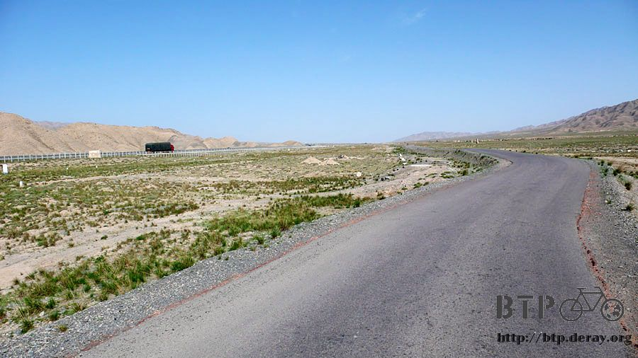
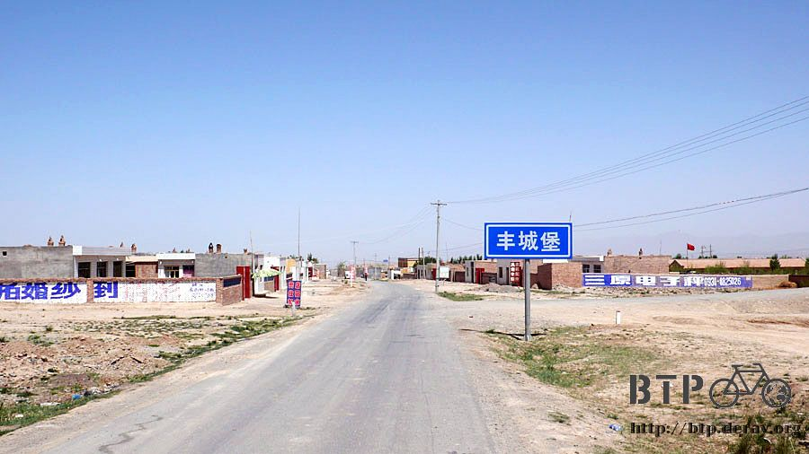
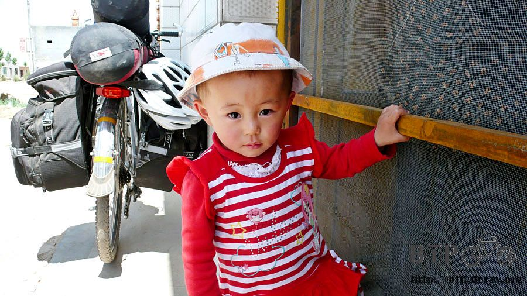
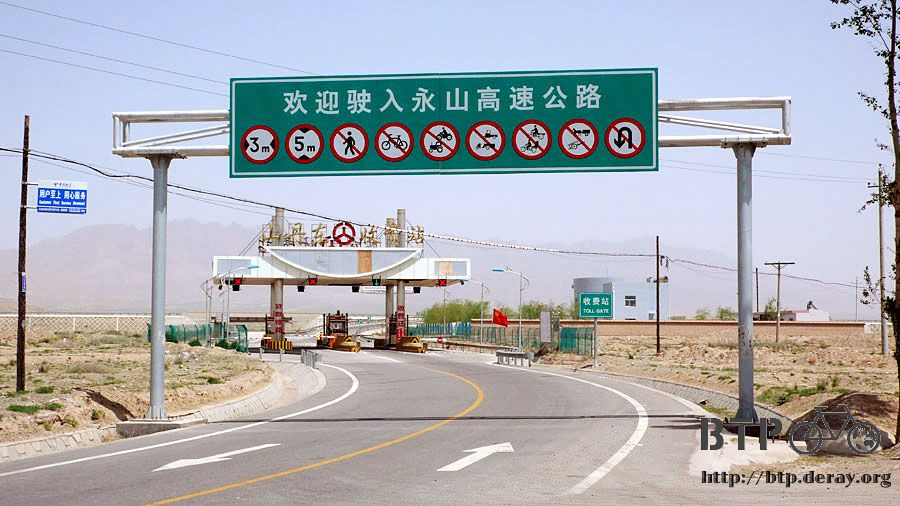
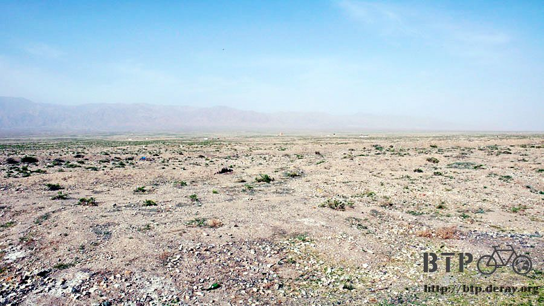
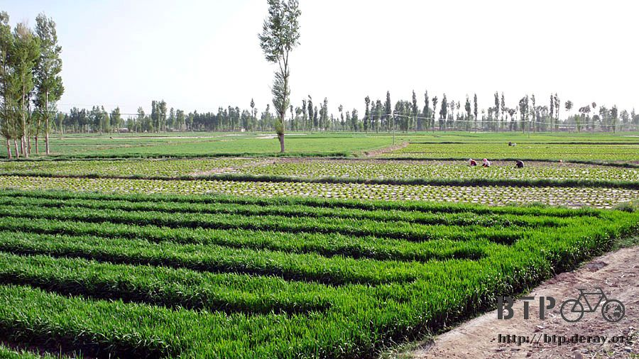
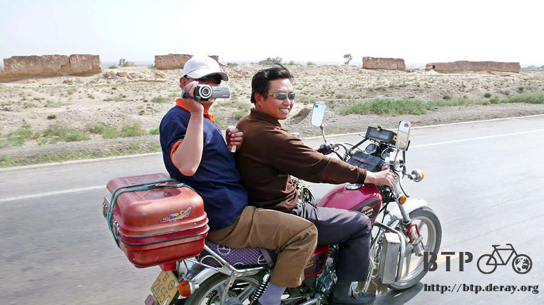
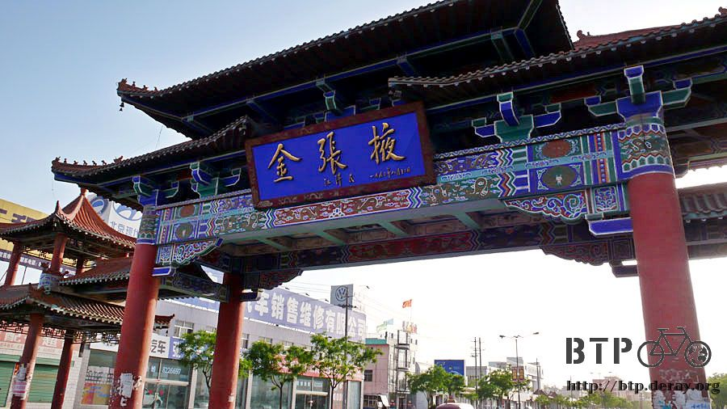
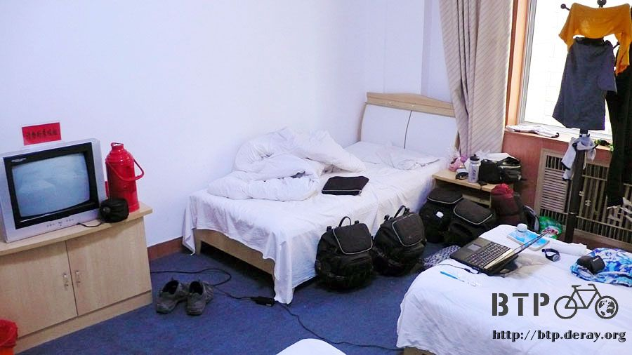

Tough Little Flowers
Getting lost led me unexpectedly into Hongshanyao, where my ride began this morning.
The hotel staff said I could get to Zhangye from here - I was not terribly lost.
To me, as long as it was not necessary to ride back where I came from,
even if I had to take a longer route, it was not too bad after all.

I did not get back on Route 312 which vanished about halfway through yesterday,
but instead to a side road running parallel to a highway.
It was not for my loss, but my gain – unexpected.
Riding along the highway would save me quite some time.
Meanwhile, I wouldn’t be bothered by roaring trucks.
The temperature in the early morning was cool. However, an hour later,
around 8:00am, the temperature worked its way up again as yesterday.
There was no breakfast shop and I did not want to ride with hunger.
When I spotted a store, I was super happy and dashed into the store. I could not wait to see what goodies the store would have.
Excluding food like instant noodles and milk powder that required preparation,
I bought one bag of egg yolk cookies, two bags of milk and three bags of peanuts, totaling seven and half RMB.

I breakfasted on milk and peanuts. The plastic bag garbage was stuffed into my pant pocket.
I would throw them away in the right place later.

The side road was on a plateau at 2000m above sea level,beautiful but barren.
I did not want to leave garbage at such serene and unspoiled place.
The wide plateau and the range of mountains in the far distance did not give me the feeling that I had been at high altitude.
Nearly all of what I could see was the sky.
The sky was various shades of blue with no clouds. The sun was high up behind my back.

Along the way, I saw a small dirt mound topped with a few stones and a stele.
Could it beeeeeeee what I imagined – a booooooody was buried inside?!?

Barren land is on both sides of the road.
As the side road did not have a road fence, I could ride anywhere I wished.
I rode into the arid terrain where some plants grew in clumps with stiff spiny leaves.
I stomped on the grass a few times (excuse me, I was really silly).
It seemed that nothing ever happened to them, they were very tough.
No wonder they could survive in such a harsh environment.

Looking down and taking a closer look, by surprise,
I spotted few yellow or purple flowers among the grass clumps.
Not only tough plants with stiff spiny leaves could thrive in desert,
but fragile little flowers could also adapt to the harsh environment and grow.
It was hard to believe that the sterile terrain could grow mushrooms!
Along the road, many small store signs said “mushrooms for sale” with hanging red plastic bags.
However, it puzzled me that where the mushrooms were raised.

Slowly and casually rode down the road, every morning I started with a laid-back riding and a delightful meal.
Until 3 or 4 o’clock in the afternoon, I would start pushing on to catch up my schedule,
and swear to myself that I would go to bed early and set off early tomorrow.
However, two days later, I repeated the laid-back manner again –
enjoying a delightful ride before noon and having a tiring ride after lunch.
Usually the sun was getting hotter and the headwind started picking up in the afternoon.
I always had two different moods in one day.

I stopped for lunch in Fengcheng, a very dry little town.
Taking off my sunglasses, my eyes were not able to adjust to the brightness. Everything I saw was like overexposure.

Lunch of a pot stewed pork lamian, the pork and tofu together with the noodles
were so delicious that it made me feel like giving the store owner a hug in tears!
(Note: lamian is hand-stretched noodle)

The large portion of noodles really filled me up.
While I was eating, a very cute little girl was running around in front of me.
She was quite different from the other kids I saw this morning who had faces as red as Guan Gong.
(Note: Guan Gong, a historical figure well known for his role in the novel
‘The Romance of the Three Kingdoms’, is traditionally portrayed as a red-faced warrior)
I thought people here were exposed to the intense sun because of the high altitude,
therefore, their faces were either dark or red. It turned out there was a kawaii one!
(Note: kawaii is Japanese which means cute)

After lunch I hit my side road again. The side road began to disappear a while later,
only a hole in the fence left for me to get on the highway.
I had been quite experienced in riding on the highway, OK, I could do it one more time!
What a pity, a well constructed highway with such little traffic.
I swerved back and forth with no car honking me, because there were none.

As long as I could cover 18 km safely on the highway and then get off, I was happy.
Hopefully, I won’t get kicked off by the highway patrol. I prayed in silence, soon a police car whooshed by.
The police car did not seem to care about my presence. Was this not a highway??
When getting off the ramp, I sneaked out to avoid toll booth operators, then turned and had a look… no doubt about it, it was a highway.
Thank god, the highway patrol did not wave me down. Well, I was curious to know what might happen if I got caught.

I took the exit ramp to Shangdan. Soon after coming off, I found shelter in a gas station.
I felt I was getting heat stroke.
I bought a bottle of fruit milk, so I could stay in the gas station without guilt.
The gas stations in China are run by “PetroChina” which bears the same name as the gas stations in Taiwan.
As I was in biking clothes, the gas station operator said “PetroChina, we fuel up your heart” to me.
Wow, the slogan was so familiar. Not only was the name the same as in Taiwan, but they also picked up the same slogan?

I just wanted to cool off at the gas station after finishing the fruit milk.
Suddenly I felt sleepy and very soon fell asleep.
It was a half an hour of deep sleep.
How deep? I drooled in my sleep.
Was I so beat?
With an altitude drop, the sad arid landscape changed back to green fields.


My sun hat got blown off and swept away by water the other day.
However the intense afternoon sun took no pity on me.
Where was my hat? I felt so sorry for losing some useful gear that I needed.
Even though I applied sunscreen on my face, I doubt it could protect me from the afternoon sun.
I put on a gauze mask to cover my face as the lady farmers in the fields did.
A bank robber!

It felt great to ride with the gauze mask on, my face did not heat up as earlier.
Two people by the road hopped on their motorcycle, caught up to me,
and recorded me with a camcorder before saying anything.
Are you making a documentary film?

I arrived in Zhangye at 7:00pm. I felt that Zhangye and Luoyang were quite alike.
The city gateway carried the name “GOLD Zhangye” by someone named Jiang.
It seemed that they had great expectation for this place.

There were many hotels on streets.
My radar for finding hotels told me that today’s accommodation was the one on the fourth floor.
I lifted up 50 kg (Dido and bags) to the fourth without knowing why I wanted to stay here.
All I could say was that it was arranged by Heaven.

Single room: 50 RMB for one night.
I stuck my tongue out and asked for a cheaper room.
It turned out that there was a room accommodating four, 20 RMB each per night.
I was the only one checking in -- a room larger than a single room for 20 RMB.
That was not all! This room had a private toilet and shower with a shower head and 24 hour hot water.

Paying for the room, filling out phony guest information, taking off dirty clothes, I wanted a comfortable hot shower.
This was my second hot shower since I set out. The last time was 20 days ago. A hot shower had become a luxury.
For the sake of enjoying the luxury, I took my time and cleaned myself inch by inch.
I did not know when I was going to have a hot shower again.
Dirty clothes always wash far cleaner with hot soapy water.
Even though the powder detergent I had was intended for use with cold water, it worked better in hot water.
The wash water was dirtier than mop water, as black as ink. I had been wearing such dirty clothes …
I felt refreshed with a nice scent.
Another nice thing about staying in this hotel on the fourth floor was that there was an internet café on the third floor.
When finishing my travel log, I could kill time downstairs and did not need to look for internet café on the street.
As I powered on my laptop, an unbelievable thing was happening.
It must be arranged by heaven, I received a wireless signal with encryption disabled in the hotel room.
With some uncertainty, I clicked “connect” and prayed in my mind.
SUCCESSFULLY CONNECTED! ! ! !
I fixed myself a simple dinner of sweet hot brown sugar water and egg yolk cookies.
I was low on food again. What was left was some brown sugar for one glass of brown sugar water,
one stick of hot dog, and one piece of brick flatbread.
The distance between towns or cities had become further and further. I’d better to stock up tomorrow for safety.
Today: 20 RMB for a super large hotel room, hot shower, private toilet, and free internet.
I wanted to stay here for one more day, can I?